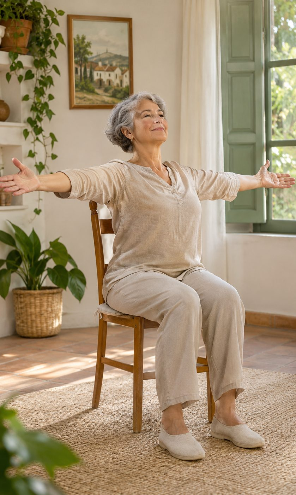

PARA MAYORES DE 50 · SIN EXPERIENCIA · DESDE CASA
¿Sientes el cuerpo agarrotado por las mañanas? Solo 10 minutos al día sentada en una silla pueden devolverte la soltura que crees que ya perdiste.
Un reto de movimiento suave pensado para mujeres de más de 50 que quieren recuperar agilidad en casa, sin equipos y sin experiencia previa. 21 días, 10 minutos al día.
Quiero empezar el reto — 9,90 €Acceso inmediato · Pago seguro · Garantía 15 días

TE ENTENDEMOS
¿Te suena esto?
Con los años, el cuerpo se queja más. Te cuesta girar el cuello, agacharte o levantarte del sofá sin un quejido. El gimnasio te parece cosa de otra edad, y las clases de yoga te quedan grandes. Y así, cuanto menos te mueves, más agarrotada te sientes. Es un círculo que cuesta romper sola.
UNA FORMA MÁS AMABLE DE MOVERTE
La solución
El tai chi es un movimiento lento, suave y sin impacto. En este reto lo hemos adaptado completamente a una silla: no tienes que estar de pie, no hay saltos ni estiramientos forzados, y no necesitas ningún material. Solo 10 minutos al día, a tu ritmo.


MÍRALO ANTES DE DECIDIR
Así son los movimientos
Lentos, suaves y controlados. Puedes seguirlos sin moverte de tu silla, sin música fuerte ni ritmos que te agobien.
en Silla✳GUÍA DEL RETO
TODO LO QUE NECESITAS
Lo que vas a recibir
- Guía del reto en PDF, letra grande, con ilustraciones de cada movimiento
- 12 vídeos cortos para seguir los movimientos conmigo
- Plan de 3 semanas: Despertar, Fluir y Fortalecer
- Rutina express de 5 minutos para los días sin tiempo
- Plan para seguir después del día 21
Todo esto por 9,90 € — menos que una clase de pilates.
Quiero empezar el reto — 9,90 €LO QUE DICEN QUIENES YA LO HAN PROBADO
Sus palabras, no las nuestras
"Llevaba años sin moverme y me daba miedo volver a empezar. Los movimientos son tan suaves que el primer día pensé que no iba a notar nada… y al tercer día ya me levantaba con menos tensión en el cuello."
"Lo que más me gustó es que puedo hacerlo en pijama antes del desayuno. No me cambia el día entero, pero sí los primeros minutos. Y eso se nota."
"Tengo artrosis en las rodillas y me lo pensé mucho. Los movimientos no cargan las articulaciones y eso fue lo que me convenció. Llevo tres semanas y sigo."
UN ESPACIO PARA TI
Para quién es
- Tienes más de 50 y quieres moverte, pero sin riesgo de hacerte daño
- Te levantas agarrotada, tienes molestias en la espalda o pasas muchas horas sentada
- Nunca has hecho ejercicio formal, o llevas años sin hacerlo
- Buscas algo que puedas hacer en casa, a tu hora y a tu ritmo
TENLO EN CUENTA
Para quién no es
- Si buscas un entrenamiento intenso o perder peso rápido
- Si tu médico te ha indicado reposo: consúltale antes de empezar
SENCILLO, DESDE EL PRIMER DÍA
Cómo funciona
- 01
Haces el pago y recibes el acceso al momento por email
- 02
Abres la guía o el vídeo del día en el móvil, la tablet o el ordenador
- 03
Te sientas, sigues los movimientos 10 minutos y marcas el día en tu calendario
CON TRANQUILIDAD
Garantía
Tienes 15 días para probarlo tranquilamente. Si no es lo que esperabas, te devolvemos el dinero sin complicaciones y sin que tengas que dar ninguna explicación.
Quiero empezar el reto — 9,90 €ESTAMOS AQUÍ PARA AYUDARTE
Preguntas frecuentes
¿Necesito experiencia?
No. Empezamos desde cero.
¿Qué silla uso?
Una silla firme, sin ruedas y sin brazos si es posible.
¿Cuánto tiempo al día?
10 minutos. Hay una versión de 5 para los días con prisa.
¿Es un pago único?
Sí. 9,90 € una sola vez, sin suscripciones.
¿Cómo recibo el acceso?
Por email, justo después del pago.
¿Es seguro si tengo problemas de espalda o articulaciones?
Los movimientos son suaves y de bajo impacto, pensados para no cargar las articulaciones. Aun así, si tu médico te ha indicado reposo o tienes alguna condición diagnosticada, consulta con él antes de empezar. Este programa es de bienestar general, no terapéutico.
¿Qué pasa si un día me lo salto?
Nada. El reto es tuyo y lo haces a tu ritmo. Si un día no puedes, sigues al día siguiente. No hace falta empezar desde cero.
TU MOMENTO EMPIEZA AQUÍ
Mañana por la mañana podrías despertar sintiéndote un poco mejor. Solo necesitas 10 minutos y una silla.
Quiero empezar el reto — 9,90 €Acceso inmediato · Pago seguro · Garantía 15 días